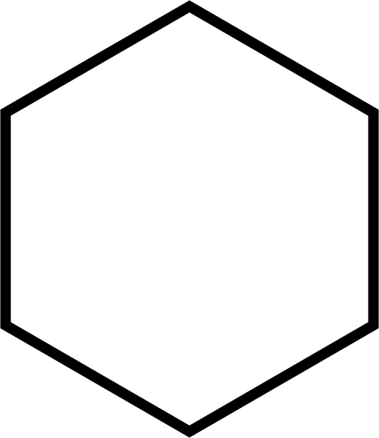

Upon reading the essay "Container technology" by Zoë Sofia, I found myself thinking that the impulse to contain and categorize elements is a human or man-made trait. I do not agree that the idea of "containment" is feminine but rather,in my opinion, a characteristic that can be found in most human beings. This made me wonder whether our nature to categorize things is inherent or learned. That is why I chose my highschool diploma program as "location" for this project. I wanted to show that even the programme that nurtures people are highly sectioned and categorized.